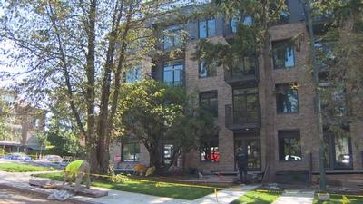

温哥华基斯兰奴区（Kitsilano）一栋由纳税人补贴、最初标榜为可负担的出租大楼，近日以每月2600元为开放式单位招租，两房单位租金更高达4200元，被批评无助解决住房危机。省府解释指贷款协议规定大楼约两成单位须以低于市价出租，并强调重点在于增加供应。
该栋名为「L2」的出租大楼位于落叶松街（Larch St.）1807号，预计下月竣工，目前正在招租，其网站显示400尺开放式单位月租由2599元起，840尺两房两厕单位月租为4299元。
卑诗新民主党政府于2021年12月宣布透过「房屋枢纽」（HousingHub）计划，向温哥华发展商Jameson Development Corp.提供3180万元低息贷款，建设有68个单位的出租大楼，其中14个单位以低于市价水平出租。但该项目网站显示，大楼廉租单位的候补名单已经爆满。
卑诗绿党党领弗斯腾鲁（Sonia Furstenau）批评，这种滥用纳税人金钱的做法令人愤怒，「以市场价格增加供应不能解决房屋危机，温哥华是过去几十年来创造最多供应的地区之一，但楼价仍然是北美最贵，政府忽略了解决核心房屋需求，即年收入低于6万元的人群。」
然而卑诗房屋厅长柯议伦（Ravi Kahlon）为该项目辩护，指省府向发展商提供的贷款规定大楼内14个单位即约两成须以低于市价出租，一房单位月租约1500元，两房单位月租约2000元，「可负担」所指的就是这些单位，「如果我们没有这样做，这个项目要么以分契物业形式进入市场，要么只以市价出租。」
柯议伦同意对于任何在租赁市场挣扎的人来说情况都不容易，但他认为关键在于增加供应，「现在的情况对年轻人来说不公平，我们没有兴建足够的房屋，也没有足够的投资在可负担房屋上，因为近20年来保守派政府一直说市场会自行修复，但实际上并没有。」